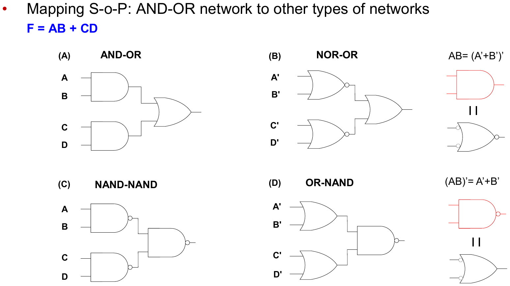

EECE274 디지털시스템설계 · 개념 정리본← 전체 목차
L06. 다단 논리 (Multilevel Logic)
Multilevel Logic / Time Response · 중간고사 범위
핵심 정리. 2단 논리(SoP)는 팬인이 커지고 게이트가 많아진다 → 공통 부분을 뽑아(factoring) 다단으로 만들면 게이트·입력 수는 줄지만 지연 단수는 늘어난다. SoP ↔ NAND-NAND, PoS ↔ NOR-NOR는 그대로 치환 가능.
개념 · 왜 다단인가
직관: F = AB + AC + AD = A(B + C + D) — A를 한 번만 쓴다.
- 2단: 구조가 단순하고 빠르지만, 항이 많으면 AND 게이트 입력 수(팬인)와 게이트 수가 폭증.
- 다단: 공통 인수·공통 부분식을 분리해 회로를 작게. 대가는 신호 경로가 길어져 지연 ↑.
개념 · NAND/NOR 등가 회로
드모르간에 의해 같은 함수를 여러 게이트 조합으로 구현 가능:
- SoP → NAND-NAND: AND-OR를 그대로 NAND-NAND로 치환.
- PoS → NOR-NOR: OR-AND를 그대로 NOR-NOR로 치환.
이유: (AB)′′ = AB처럼 이중 부정이 상쇄되기 때문. NAND·NOR가 범용 게이트라는 사실의 직접적 활용.
그림 · SoP 회로의 등가 변환

F = AB + CD의 AND-OR, NAND-NAND, NOR-OR, OR-NAND 등가 네트워크
한 줄 요약: 다단 = 회로 크기 ↓ / 지연 ↑ 트레이드오프; AND-OR ↔ NAND-NAND 치환 규칙은 암기.